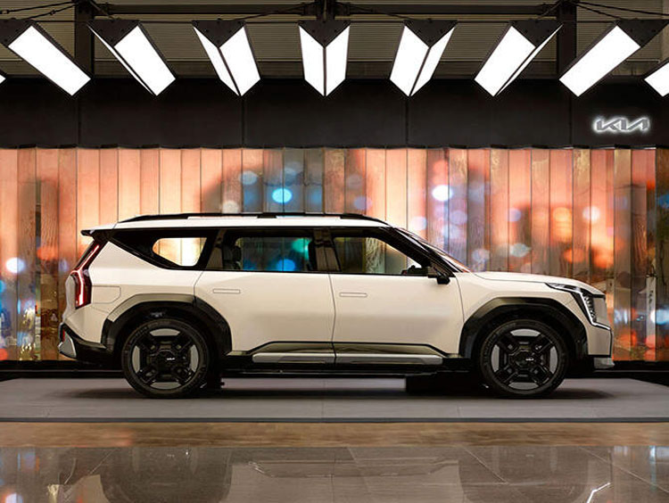

기아,체험형 전시부스 인천공항 오픈
2024-07-02

기아는 전 세계로 향하는 관문인 인천국제공항 제1여객터미널 3층 출국장 H구역 인근에 위치한 전시부스를 체험형 콘텐츠로 새 단장하고 운영에 나섰다고 2일(화) 밝혔다.
인천공항 ‘기아 체험형 전시부스’는 2021년 차량을 전시한 이후 이번 리뉴얼(Renewal)을 통해 방문객들이 차량을 직접 탑승해 볼 수 있도록 개방감을 극대화함으로써 기아 브랜드와 상품을 보다 자유롭게 경험할 수 있도록 했다.
현재 전시부스에는 기아의 E-GMP 기반 플래그십 SUV EV9이 전시돼 있으며, 향후 신차 출시에 맞춰 전시 차량을 지속 교체해 방문객들이 기아의 EV 라인업과 혁신적 모빌리티 기술을 보다 쉽게 체험할 수 있도록 한다는 방침이다.
전시부스는 저명한 서아키텍스(Suh Architects) 건축사 사무소가 기아 브랜드 정체성을 담아 설계했다. 여행객들이 여행을 시작하며 영감을 가져갈 수 있도록 "Movement to Inspiration(움직임에서 영감으로)"이라는 전시 콘셉트를 반영했다.
부스 벽면은 세밀하게 타공된 슈퍼미러(Super mirror, 스테인리스 재질의 거울)와 LED스크린이 결합된 더블스킨(Double Skin) 구조로 설계됐다. 독창적 구조로 방문객들은 평범한 거울을 보다가 갑자기 거울 뒤에 숨겨져 있던 화면에서 영상이 송출되는 비일상적 순간을 경험할 수 있다.
슈퍼미러의 각 면은 삼각형 모양으로 배열돼, 다양한 각도에서 공간을 반사하며 전시공간을 더 넓어 보이게 하고 독특한 시각적 효과를 창출한다. 슈퍼미러 뒤 공간에 숨겨져 있는 LED 스크린에서는 동적인 아트워크(Artwork, 영상 예술작품)가 송출되고, 이는 세밀하게 타공된 부분을 통해 관람객들의 시선을 끈다. 아트워크는 자연의 추상적인 움직임을 표현하고 있으며, 차량이 마치 공간을 달리는 듯한 장면을 연출해 관람객에게 몰입감을 제공한다.
기아 관계자는 “기아는 고객 중심 브랜드로서 사람들에게 움직임으로 새로운 영감과 감동을 선사하기 위해 다양한 노력을 하고 있다”며 “여행을 떠나는 고객들의 첫걸음이 기아 전시부스와 아트워크가 주는 풍부한 영감으로 가득 차기를 바란다”고 밝혔다.
한편, ‘기아 체험형 전시부스’에는 2개국어(한/영)가 가능한 전문 도슨트(Docent)가 오전 9시부터 오후 9시까지 상주해 차량 정보, 브랜드 및 부스 디자인 등에 대한 고객 소통을 지원한다.